Vetva Hajman – Škodová (Somogy + Mokrance → Budapešť → Košice)
Súvisí: Vetva Ličko · Prehľad
Košická vetva babky Ireny.
Hajmanovci prišli do Košíc okolo roku 1900: Ferenc zo somogyskej dediny Szőlőskislak pri Balatone — a jeho rodičia sa do Somogy prisťahovali z Poľska. Ferencova žena Alžbeta Suverová bola z Mokraniec pri Moldave nad Bodvou, dvadsaťpäť kilometrov od Košíc.
Spoznali sa v Budapešti, kde ona slúžila a on tesal ako stolársky pomocník; po svadbe roku 1900 sa usadili v Košiciach, v kraji jej rodiny. Vyrástol z nich remeselnícky klan — kominár, kožušník, stolári, hudobník, neskôr lekár — usadený okolo ulíc Lichardova a Skladná.
Škodovci sú rodina Ireninej matky Heleny.
Rodová línia
Babka Irena Hajmanová (1944–2015)
| Narodenie | *16.11.1944 Košice |
| Úmrtie | †20.4.2015 |
| Manželia | ⚭1 Jozef Ličko (Vetva Ličko) · ⚭2 Peter Lorenowicz |
| Hrob | nemá — bola spopolnená a popol rozptýlený |
Zomrela ako Irena Lorenowiczová. Rodičov — Rudolfa Hajmana a Helenu rod. Škodovú — potvrdzuje jej rodný list (kniha narodení Košice‑Staré Mesto 1944).
Pradedo Rudolf Hajman (1910–1991)
| Narodenie | *22.1.1910 Košice (rodisko uvádza úmrtný list) |
| Úmrtie | †22.9.1991 Košice |
| Rodičia | syn Ferenca a Alžbety rod. Šuverovej, ako to potvrdila matrika |
| Povolanie | kominár |
| Národnosť | maďarská |
V rokoch 1939 až 1941 bol funkcionárom odborového zväzu kominárov v Košiciach — od jej založenia roku 1939 až do roku 1941 tajomníkom (viac nižšie).
Dostaval rodinný dom na Lichardovej 30.
Prababka Helena rod. Škodová (1919–1994)
| Narodenie | *1. apríla 1919 v Košiciach |
| Úmrtie | †5. apríla 1994 v Košiciach, štyri dni po svojich sedemdesiatych piatych narodeninách |
| Bydlisko | Lichardova 30 |
| Jazyk | hovorila po slovensky |
Do matriky sa narodila ako Ilona a priezvisko Škoda dostala až ako osemročná, keď ju roku 1927 uzákonil sobáš jej matky.
Podoba priezviska kolíše: Irenin rodný zápis z roku 1944 — vznikol ešte za maďarskej správy mesta — ju píše „Skodová"; maďarčina mäkčeň nepozná. Jej vlastný úmrtný list ju však vedie ako „rod. Škodová" s mäkčeňom (kniha úmrtí Košice‑Západ 1994), a ten tvar je tým rozhodnutý.
Praprababka Katarína rod. Zazyláková (1897–1985)
| Vzťah | Helenina matka |
| Roky | 1897–1985; v čase Heleninho narodenia mala dvadsaťjeden rokov |
| Manžel | Justin Škoda, sobáš 29. apríla 1923 v Košiciach |
| Hrob | ten istý ako dcéra a zať |
Evidencia cintorína ju vedie ako Škodovú; kameň na hrobe má vyryté „SKODOVA" bez mäkčeňa. Priezvisko Škodová je po manželovi.
Jej rodné meno prezradil až Helenin rodný zápis: matrikár ju roku 1919 zapísal ako rodenú Kaminszky, no 2. februára 1927 zápis opravil — správne rodné priezvisko znie Zazyláková.
Praprastarý otec Justin Škoda
Obuvník, rímskokatolík, obyvateľ Košíc. Keď sa 29. apríla 1923 ženil s Katarínou, mal dvadsaťdva rokov, a matrika dodáva, že v čase Heleninho narodenia mal osemnásť — narodil sa teda okolo roku 1900.
Týmto sobášom bola Helena uzákonená ako jeho dcéra; rozhodol o tom Župný úrad v Košiciach 15. marca 1927.
Ich svadbu oznámil aj košický Magyar Hirlap 9. mája 1923 v týždennom výkaze matričného úradu: „Skoda Justin — Zazylak Katalin".
A na jeseň roku 1932 sa Justin objavuje ešte raz — v zozname tých, čo zložili šoférske skúšky v košickej autoškole Volán.
Irenin brat Rudolf ml.
Emigroval do Kanady, pravdepodobne v päťdesiatych alebo šesťdesiatych rokoch. Podľa rodinného podania sa neskôr presťahoval do Izraela a konvertoval na judaizmus.
V košických knihách narodení z rokov 1930 až 1944 nie je, narodil sa teda zrejme až po roku 1945.
2× prastarí rodičia: Ferenc Hajman a Alžbeta rod. Suverová
| Ferenc Hajman | *31.7.1873 Szőlőskislak, stolársky pomocník |
| Alžbeta rod. Suverová | *6.3.1876 Mokrance, †po roku 1930 |
| Sobáš | 4.2.1900 v Budapešti |
Dátum Ferencovho úmrtia nepoznáme, ale roku 1915 už bol dom písaný na manželku.
3× prastarí rodičia: János Hajman a Anna rod. Huterová — prisťahovalci z Poľska
Obaja sa narodili v Rajczi (v matrikách „Raicza, Lengyelhon"), János okolo roku 1836, Anna okolo 1838 až 1841.
Roku 1861 slúžili obaja ako nádenníci v osade Csehi; neskôr bol János želiarom v Kislaku.
Anna zomrela 7.4.1879 pri pôrode — dieťaťom bol práve najmladší Jozef. Ferenc osirel ako päťročný a do Košíc odchádzal už bez matky.
Deti okrem Ferenca:
- Rozália (*~1861) — vydala sa 22.1.1882 v Szőlősgyöröku za Mártona Buka, správnejšie Fokta.
- prvý Ferentz (krstený 1867) — zrejme zomrel malý; náš prapradedo *1873 dostal meno po ňom.
- Mária (*7.9.1869) — vydala sa roku 1906 za Andrása Lachmaneka.
- druhá Mária (krstená 17.11.1870) — jej osud nepoznáme.
- najmladší Jozef (krstený 1879) — jeho ďalší osud nepoznáme.
Prvé doložené vnúča Jánosa a Anny je Rozáliina dcéra Rozália Buková, narodená 15. januára 1884 a pokrstená o deň neskôr. Rodina vtedy bývala v Kislaku, Márton sa živil ako čeľadník a za kmotrov im išli Mráv György a Zsolvos Rozália, poľný hájnik.
4× prastarí rodičia
František Heiman (Jánosov otec) a František Hutera (Annin otec) — obaja z Poľska. Mená ich manželiek matrika neuvádza.
3× prababka Erzsébet Suver
Slúžka v Mokranciach, slobodná matka Alžbety; neskôr vydatá Parohácsová, majiteľka domu na Pipa utca 16, †koncom 1914 alebo v januári 1915 v Košiciach.
Kľúčové dokumenty
Rodný zápis Heleny — Košice, 1. apríla 1919
Výpis z matriky narodených matričného úradu Košice, zväzok 36, strana 79, číslo 333, rok 1919. Zápis je vedený po maďarsky, dieťa je v ňom Ilona.
| Otec | József Presovszki, rím. kat., mäsiarsky pomocník, 23 rokov |
| Matka | Katalin, rím. kat., 21 rokov, v zápise rodená Kaminszky |
| Bydlisko oboch | Kassa, Klobusitzky körút 3 — dnešná Masarykova |
| Dieťa | Ilona, dievča, rím. kat., narodená 1. apríla 1919 na tej istej adrese |
Pod zápisom sú tri poznámky matrikára a každá mení, čo zápis hovorí:
- 30. júla 1919 — údaje vzťahujúce sa k zákonnému otcovi sa mažú, rozhodol o tom košický mešťanosta.
- 2. februára 1927 — priezvisko matky dieťaťa je správne Zazyláková.
- 15. marca 1927 — dieťa bolo uzákonené sobášom matky s prirodzeným otcom Justinom Škodom, rímskokatolíckym dvadsaťdvaročným obuvníkom, obyvateľom Košíc, ktorý sa s matkou zosobášil 29. apríla 1923 v Košiciach; jeho vek v čase narodenia dieťaťa bol osemnásť rokov.
Helena teda prišla na svet do rodiny, ktorú matrika po štyroch mesiacoch prepísala. Muž zapísaný ako otec z dokladu zmizol, matkino rodné meno sa ukázalo ako nesprávne a právneho otca dieťa dostalo až roku 1927, keď malo osem rokov.
Adresa: Klobusitzky körút 3
Adresa je dnes Masarykova — ulica sa do roku 1890 volala Kert utca (Záhradnícka), potom dostala meno po grófovi Klobusiczkom a od roku 1919 nesie meno T. G. Masaryka. V dvadsiatych rokoch ju košické inzeráty uvádzali oboma menami naraz: „Masaryk (Klobusitzky) körút".
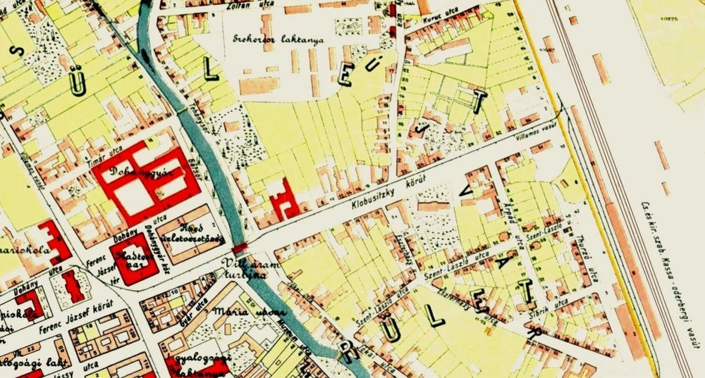
Plán mesta z roku 1912: Klobusitzky körút vedie od potoka na východ k tratiam Košicko-bohumínskej železnice a popri ňom je vyznačená električková dráha („villamos vasut"). Vľavo hore tabaková továreň, pri potoku mestská elektrická turbína, severne Széchenyiho kasárne. Plán upravil J. Bauer.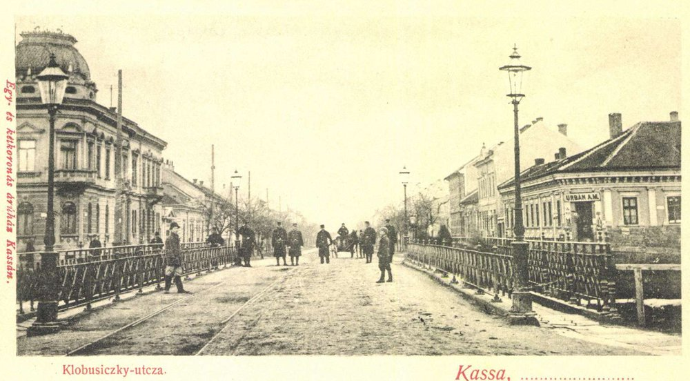
Pohľadnica z roku 1901, západný koniec ulice: v popredí železný most cez Mlynský potok z roku 1885, ktorý nahradil starší drevený. V ceste vidno koľajnice, po oboch stranách plynové lampy. Od tohto mosta sa ulica číslovala — dom číslo 3 stál hneď za ním. Popiska pohľadnice znie „Klobusiczky-utcza". Zverejnil HistoricKE.Bola to rušná predmestská trieda na električkovej trase, kúsok od stanice, a číslovala sa od mosta cez Mlynský potok.
Susedstvo vieme dom po dome. Naľavo od mosta stála na čísle 2 poschodová nárožná budova z roku 1893 a hneď za ňou na čísle 4 továreň Juraja Eduarda Delavala na drevené, drôtené a železné výrobky z roku 1891. Po jeho smrti ju prevzal G. Bradovka a zriadil v nej roku 1909 parnú práčovňu, k nej pribudla farbiareň šiat a látok a chemická čistiareň; práve tá potom v dvadsiatych rokoch inzerovala čistenie peria a záclon.
Naproti, na južnej strane, stál na čísle 1 prízemný rohový dom, ktorý dal koncom deväťdesiatych rokov postaviť Alexander Bukovszky. V jeho nárožnej predajni obchodoval Urbán — v januári 1900 inzeroval nyírske víno, syr, tvaroh, korenie a južné ovocie s rozvozom — a jeho firemný nápis je na pohľadnici čitateľný.
Dom číslo 3 stál hneď vedľa neho, druhý od mosta na južnej strane, oproti Bradovkovej práčovni. Tam Katarína s Helenou bývali.
Zo susedstva dnes nestojí takmer nič: dom číslo 1 zbúrali roku 1929 a vdova Regina Feldmannová postavila na jeho mieste nájomný dom s pätnástimi bytmi, ktorý tam je dodnes; číslo 2 asanovali roku 1978, aby vzniklo parkovisko pred Domom odborov, dnešným Jumbo centrom.
Kúsok ďalej po tej istej ulici, na dnešnom čísle 19, stojí kaštieľ Regina Pacis — okolo roku 1877 ho dala v záhrade rodinného sídla postaviť grófka Regina Klobusitzká, po ktorej rode sa ulica volala.
Sobášny zápis — Budapešť, 4.2.1900
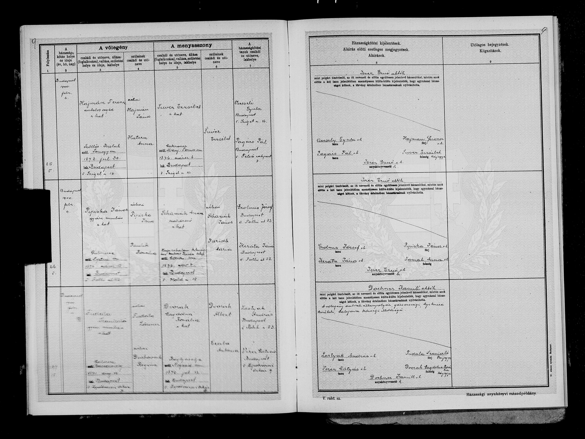
| Ženích | Nevesta | |
|---|---|---|
| Meno | Hajmán Ferencz, tovariš stolár, rím. kat. | Suver Erzsébet, rím. kat. |
| Narodenie | Szöllős-Kislak, Somogy, 30.7.1873 | Makrancz, Abaúj-Torna, 6.3.1876 |
| Bydlisko | Budapest V., Sziget u. 16 | Budapest V., Sziget u. 16 (bývali už spolu) |
| Rodičia | † Hajmán János a Hutera Anna | iba „Suver Erzsébet" — otec neuvedený |
Ferencovi rodičia sú János Hajman a Anna Huterová. Slovko „néhai" — nebohý — pri Jánosovi znamená, že v roku 1900 už nežil ani otec, takže Ferenc vstupoval do manželstva ako sirota po oboch rodičoch.
Pri neveste je uvedená iba matka: Alžbeta bola nemanželské dieťa a jej matka Erzsébet Suver v tom čase ešte žila.
Rodný zápis Jozefa — Budapešť 1898

József, *9.5.1898, narodený v pôrodnici uhorskej kráľovskej univerzity. Matka: „Suver Erzsébet", slúžka, dvadsaťdvaročná, rodáčka z Mokraniec. Dieťa je zapísané ako nemanželské.
O šesť rokov neskôr, 10. júla 1904, prišiel Ferenc pred košického matrikára a syna uznal za svojho — zápisnica ho opisuje ako „stolárskeho pomocníka, košického obyvateľa, 31-ročného" a je k nej pripojený výpis o sobáši rodičov. Vďaka tomu má Jozef v rodnom zápise dodatočnú poznámku o otcovi.
Vzorec sa v tejto rodine zopakoval cez generácie: matka slúžka a nemanželská dcéra (Alžbeta 1876), potom dcéra slúžka v Budapešti a nemanželský syn (Jozef 1898), tentoraz legitimizovaný svadbou rodičov.
Krst Ferenca 1873 — Szőlősgyörök

Ferenc, *31.7.1873, krstený 2.8.1873, bydlisko Kis-lak; rodičia Hajmán János, želiar, a Hutera Anna. Vek sedí na deň presne s tým, čo o sebe Ferenc povedal v Košiciach roku 1904.
Krst Alžbety 1876 — Moldava nad Bodvou

Erzsébet, *6.3.1876, krstená hneď na druhý deň, nemanželská; matka Suver Erzsébet, slúžka, Makranc č. 10.
Sobáš rodičov Ferenca — 10.2.1861, Szőlősgyörök
- Joannes Heimann, 25-ročný, slobodný nádenník, pôvodom z „Raitz, lengyel hon" — teda z Rajcze v Poľsku; bydlisko Csehi; otec Franciscus Heiman.
- Anna Hutera, 23-ročná, slobodná nádenníčka, rovnaký pôvod aj bydlisko; otec Franciscus Hutera.
Dvaja poľskí nádenníci, ktorí sa stretli v maďarskej dedine — toto je najstarší doklad o príchode rodiny do Uhorska.
Annino úmrtie — 7.4.1879, Kislak
„Hutera Anna, želiarka, manželka Heimana Jánosa, narodená v Rajczi v Poľsku, zomrela v Kislaku vo veku 38 rokov, príčina: v dôsledku pôrodu." Pochovali ju nasledujúci deň.
Úmrtie nezávisle potvrdil aj maďarský archív v Kaposvári.
Rodina Ferenca a Alžbety v Košiciach
Prišli roku 1900, čerstvo po svadbe. Mali piatich doložených synov.
V roku 1930 žil celý klan v jednom bloku: vdova Alžbeta so slobodnými synmi na Lichardovej 37, Jozef s rodinou na Skladnej 47 hneď vedľa — a Rudolf neskôr dostaval dom na Lichardovej 30.
- Jozef — *9.5.1898 Budapešť, †1977 Košice. Majiteľ domu na Skladnej 47. ⚭ Marta rod. Kočišová (1902–1982). Deti: Magda *1923, Tibor *1926 a Marta *1928.
- František — *3.12.1900, ⚭ Anna *1903.
- Rudolf — pradedo.
- Ján — *1913, kožušník, †1992. ⚭ Alžbeta *1922. O jeho živote mimo dielne vieme viac než o ktoromkoľvek inom z bratov (nižšie).
- Ladislav — *1916, úradník a hudobník košického rozhlasového orchestra; roky 1940 až 1945 strávil pri Miškovci ako dirigent baníckej kapely (nižšie).
- Anna — *1903, †1970, vydatá Schullerová; pochovaná v hrobe s Rudolfom a Helenou, takže takmer isto Rudolfova sestra.
- MUDr. Tibor Hajman (1926–1988), Jozefov syn — chirurg, ktorý sa 1. júla 1964 stal prvým vedúcim lekárom protetického oddelenia v Košiciach. Ako štrnásťročný študoval na košickom Hunfalvyho gymnáziu — ročenka 1940 mu zapísala prospech „jó" a miesto v školskom speváckom zbore.

Dom na Pipa utca 16 — dnešná Dymková
Kúpa 1898
V druhej polovici septembra 1898 kúpila dom „Parohács Jánosné szül. Schurer Erzsébet" za 680 zlatých od šiestich súrodencov Hankóovcov — Jánosa, Mihálya, Alajosa, Gyulu, Julianny a Erzsébety.
Oznámil to košický denník Pannonia 6. októbra 1898 v rubrike prevodov nehnuteľností; v tom istom zozname sa predávali aj susedné vložky 4718 a 4719, takže šlo o rozpredaj celého bloku.
Prevod 1915 — dedičstvo
Mestský vestník Városi Közlöny uverejnil 15. marca 1915 prevody za január 1915, roztriedené podľa právneho titulu: kúpa, darovanie, dedičstvo. Náš zápis stojí pod hlavičkou „Hagyaték címén" — teda dedičstvom:
„A kassai 4720. sz. tjkvben Parohács Jánosné nevén írt (Pipa u. 16. sz.) ingatlan Hajman Ferencné szül. Schurer Erzsébet javára."
Obidve ženy sú v prameňoch vedené ako rodená Schurer Erzsébet a majetok medzi nimi prešiel dedením, nie predajom ani darovaním: sú to matka a dcéra.
Staršia Erzsébet, slúžka z Mokraniec a matka nemanželskej Alžbety, sa vydala za muža menom Parohács János, kúpila v roku 1898 tento dom a po jej smrti ho zdedila dcéra Alžbeta.
Prevod bol zaknihovaný v januári 1915, takže Erzsébet zomrela koncom roku 1914 alebo v prvých týždňoch roku 1915. Jej úmrtný zápis hľadáme v košickej civilnej matrike.
Kde to bolo
Pipa utca sa neskôr volala Dymková — potvrdil to Archív mesta Košice. Maďarské pipa znamená fajku, teda dym — odtiaľ slovenský preklad.
Ulica dnes už neexistuje: ležala južne pod Štúrovou, v priestore za dnešnou Steel Arenou, kde neskôr vyrástlo sídlisko a v posledných rokoch bytový komplex Herberia.
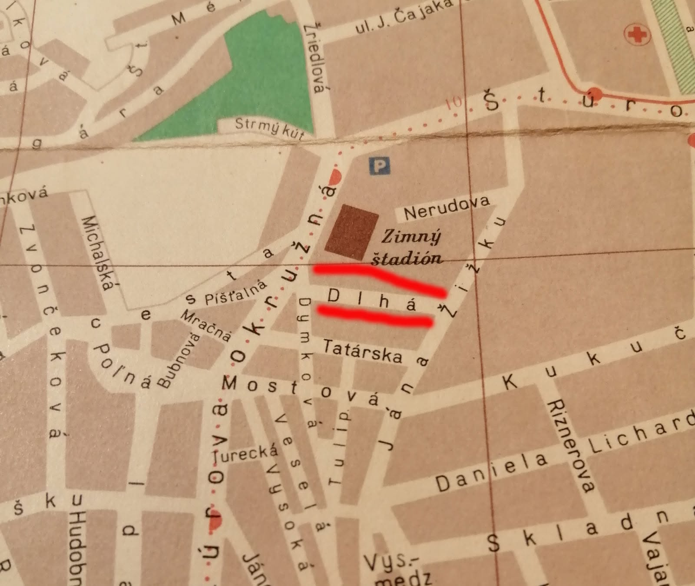
Výrez z dobového plánu mesta: Dymková vedie medzi Tatárskou, Mostovou a Dlhou, hneď pod Zimným štadiónom. Vpravo dole sú Daniela Lichardova a Skladná — adresy, kde rodina bývala v roku 1930. Plán zverejnil Anton IV Mlynárik.Aká to bola štvrť
Tábor a susedné Huštáky boli od 19. storočia chudobná periféria za starými hradbami — meno Tábor pripomína staré vojenské táborisko. Bývali tam robotníci, nádenníci a remeselnícki tovariši v nízkych domčekoch bez vybavenia.
Stolársky pomocník a bývalá slúžka sem zapadli presne a cena domu tomu zodpovedá: 680 zlatých bolo za nehnuteľnosť málo.
Štvrť pritom nebola etnicky jednoliata. Podľa spomienok pamätníkov tu mali malé domčeky so záhradami aj neromské rodiny a susedstvo fungovalo — a čo je pre nás podstatné, bývalo sa vo vlastnom, nie v nájomných barakoch. Presne to sedí na Ferenca s Alžbetou: vlastný domček v najlacnejšej štvrti mesta.
Rómske osídlenie tu bolo už medzi vojnami — dobová pohľadnica z dvadsiatych rokov okraj štvrte tak aj popisuje. Veľkým getom sa však oblasť stala až po druhej svetovej vojne, keď do Košíc prúdili robotníci za prácou v novom priemysle; koncom šesťdesiatych a v sedemdesiatych rokoch ju režim asanoval aj s Dymkovou ulicou.
Pre Ferenca a Alžbetu to bola predovšetkým najlacnejšia štvrť v meste — bývali tu robotníci, nádenníci a tovariši bez ohľadu na pôvod.
Ako štvrť vyzerala
Prvá fotografia je z dvadsiatych rokov, teda z obdobia, keď rodina ešte dom na Pipa utca vlastnila. Ostatné sú o generáciu až dve mladšie — z päťdesiatych až sedemdesiatych rokov, tesne pred asanáciou.
Uličná sieť a nízka zástavba sú na nich ešte tie pôvodné, takže dávajú dobrú predstavu o mieste, kde rodina začínala.
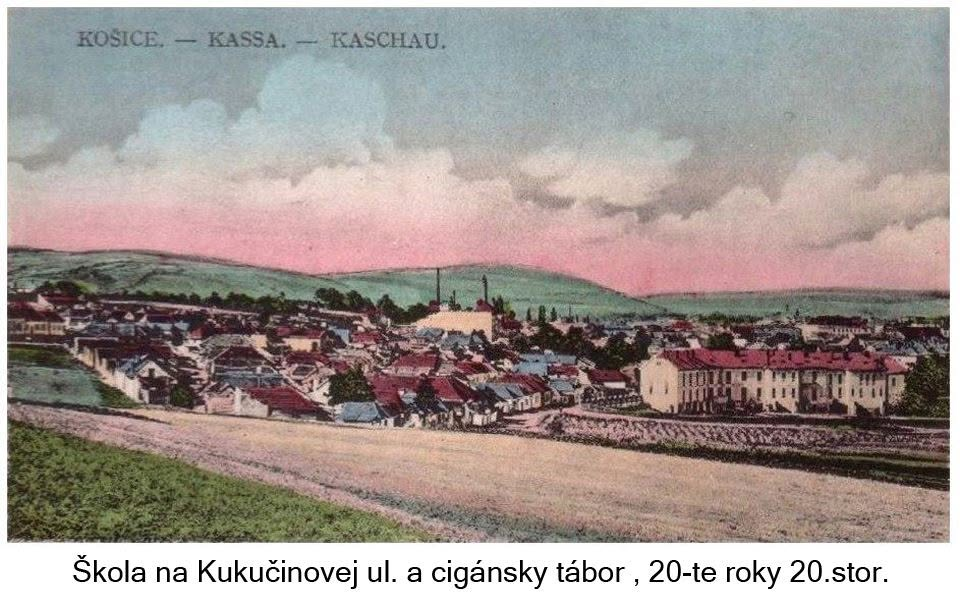
⭐ Najbližšie k ich času: kolorovaná pohľadnica z dvadsiatych rokov — škola na Kukučínovej a za ňou štvrť. Nízke domčeky, polia až po okraj zástavby, komíny fabrík v pozadí. Alžbeta v tom čase ešte vlastnila dom na Pipa utca. Pohľadnicu zverejnil Juraj Menyhért.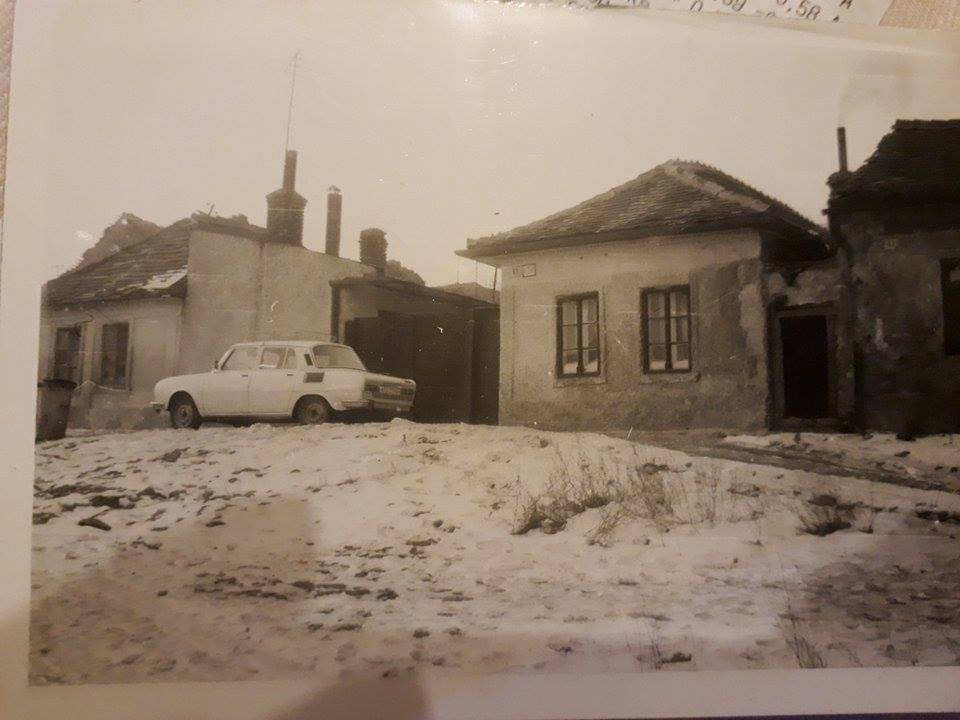
Dymková ulica — bývalá Pipa utca, kde stál dom rodiny. Foto zverejnila Gabika Miklossi.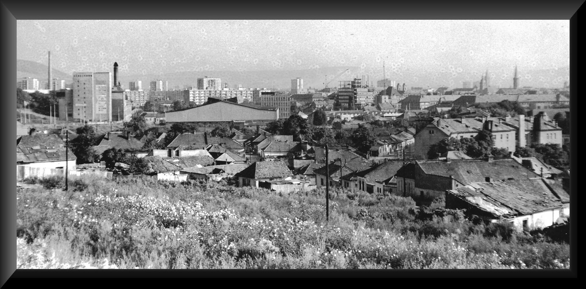
Panoráma štvrte zo Žižkovej; vľavo Štúrova a Okružná. Foto zverejnil Tibor Tóth.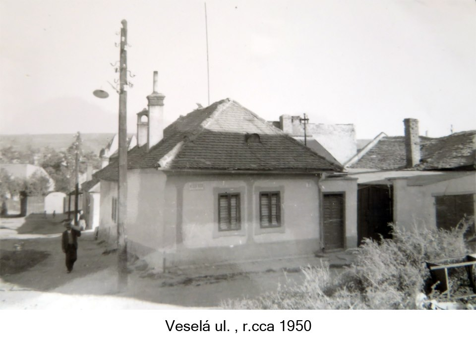
Veselá ulica, päťdesiate roky. Foto zverejnil Juraj Menyhert.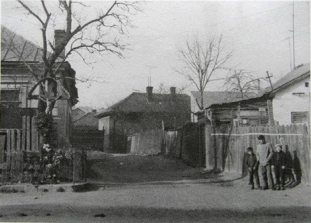
Mostová ulica od Žižkovej, sedemdesiate roky. Foto zverejnil Juraj Menyhert.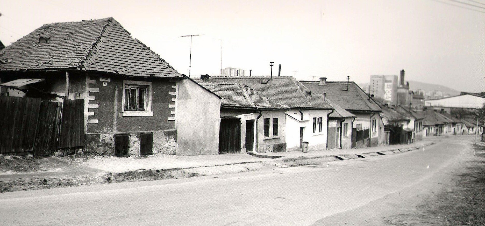
Žižkova ulica a štvrť za ňou. Foto zverejnil Marián Sandt.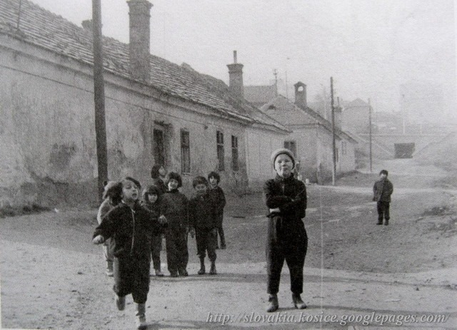
Tulipánová ulica. Foto zverejnil Matúš Majerník.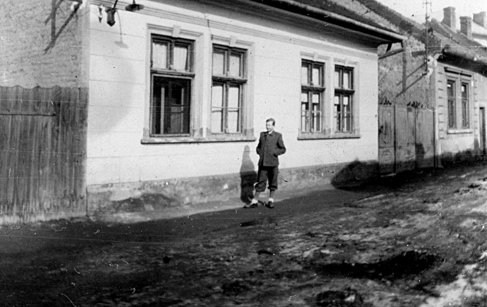
Prízemný dom so štyrmi oknami a drevenými vrátami na nespevnenej ulici — typ bývania, aký v štvrti prevládal. Foto zverejnil Anton IV Mlynárik.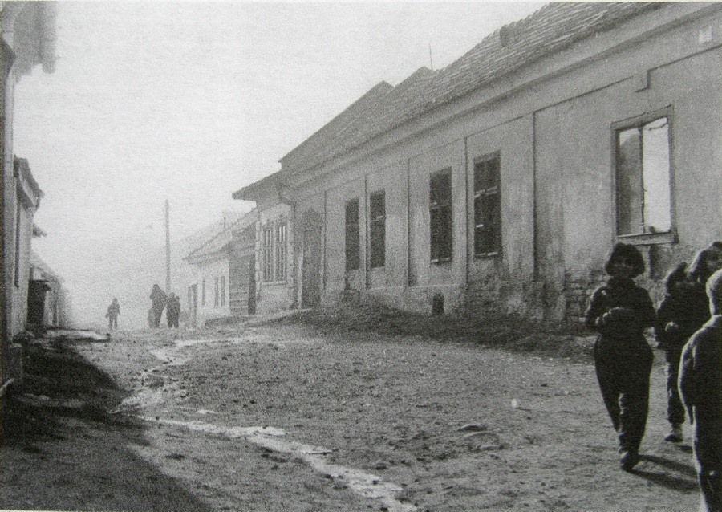
Ulica v štvrti — omietky opadané, cesta rozmoknutá. Foto zverejnil Marián Egry.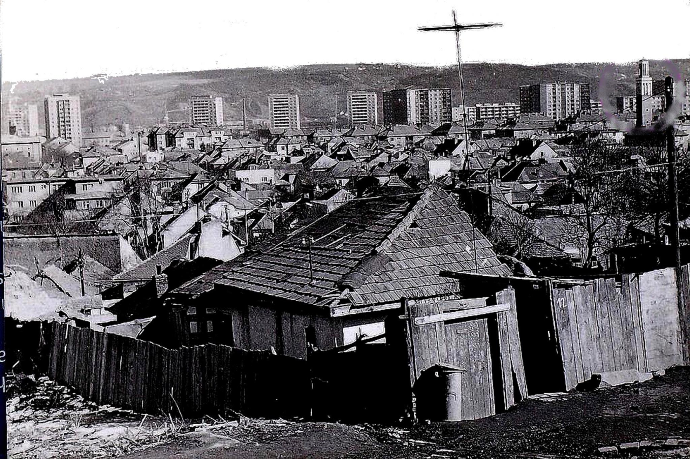
Sedemdesiate roky tesne pred asanáciou: chatrč v popredí, za ňou pôvodná nízka zástavba a na obzore už panelové sídliská. Foto zverejnili Teo Tibor Andreas, Juraj Menyhért a Mar Cello.Zdroj všetkých záberov: Fotografie ulíc Košíc, album „cigánsky tábor"; autorstvo podľa údajov pri jednotlivých fotografiách. Ak si niektorý z autorov neželá zverejnenie, fotografiu na požiadanie odstránime.
Svedectvo z novembra 1910
Ako sa na Pipa utca žilo, opísal košický denník Felsőmagyarország 23. novembra 1910 — v čase, keď Alžbeta s Ferencom bývali v tej istej ulici. Článok mal titulok „Nepochovaná mŕtvola na Pipa utca — tri dni na slamenom došku" a ulicu nazýval „najtemnejšou Pipa utcou".
Stalo sa toto. V dome č. 20 žil drevorubač Simkó János so svojou družkou Magyar Annou a jej matkou. Sedemdesiatročná starenka v sobotu v noci zomrela.
V utorok ráno prišiel do domu policajt doručiť Anne predvolanie — byt našiel otvorený a prázdny, komoru zamknutú na visiaci zámok. Susedia mu povedali, že v komore leží na slame nebožka, nevystretá a nepochovaná.
Simkóa priviedli od Šebastovskej cesty, kde rúbal drevo; bránil sa, že úmrtie nahlásil, ale na pohreb nemal peniaze a mestský obhliadač mŕtvol vraj odmietol prísť, kým nedostane dvojkorunový poplatok za obhliadku. Obhliadač to poprel.
Novinár k tomu dodal vetu, ktorá o štvrti povie viac než ktorýkoľvek úradný dokument: sú vrstvy spoločnosti, kde bieda býva medzi živými, a tie nie sú zariadené na to, aby si mohli dovoliť smrť — teda daň, ktorú pozostalým ukladá pochovanie mŕtveho.
Toto bolo susedstvo, v ktorom vyrastali Ferencovi synovia. O dvadsať rokov neskôr má rodina dom na Lichardovej a syn Jozef vlastný na Skladnej.
Ako sa ulice volali
Mená sa menili s režimami:
- Pipa utca bola po roku 1918 Dymková.
- dnešná Skladná, kde býval Ferencov syn Jozef, sa predtým volala Raktár utca a v rokoch 1938–45 Szüllő Géza utca.
Pri hľadaní v starých adresároch mesta preto treba používať dobové názvy — pod dnešnými sa rodina nenájde.
Kúsok od neskoršieho domova
Na dobovom pláne mesta vidno, že Dymková ležala medzi Tatárskou, Mostovou a Dlhou, hneď za zimným štadiónom — a Daniela Lichardova so Skladnou sú odtiaľ len pár blokov.
Keď sa teda rodina po roku 1915 presťahovala, nešla nikam ďaleko: zostala v tej istej časti mesta, len o ulicu či dve vyššie. Ferencovi synovia teda vyrastali stále v tom istom prostredí.
Kto v dome býval, zatiaľ nevieme. Vieme len, že Ferenc s Alžbetou prišli do Košíc roku 1900, teda dva roky po kúpe domu — a že v sčítaní roku 1930 už bývajú inde, na Lichardovej a Skladnej. Mená obyvateľov by prezradili mestské súpisy obyvateľov alebo dobové adresáre Košíc, usporiadané po uliciach.
Rudolf a kominárski odborári
Košická skupina kresťansko-sociálneho odborového zväzu kominárov vznikla 26. februára 1939 — pár mesiacov po tom, čo Košice pripadli Maďarsku. Podľa vtedajšej tlače sa vtedy zišli „robotnícki bratia z Košíc a okolia, aby si vzali riadenie svojho osudu do vlastných rúk".
Rudolf bol pri tom od začiatku a hneď ho zvolili za tajomníka. Na tej istej schôdzi podal aj návrh, ktorý zhromaždenie prijalo: požiadať majstrov, aby odteraz zamestnávali len odborovo organizovaných robotníkov. Mal vtedy dvadsaťdeväť rokov.
Vo funkcii ho potvrdzovali znova a znova: na výročnom zhromaždení v decembri 1939, potom v roku 1940 aj 1941. Zakaždým predniesol správu o činnosti.
Čo skupina dosiahla
Vlastnú bilanciu uverejnilo vedenie skupiny v novembri 1940 pod titulkom „Ochrana robotníkov u košických kominárov".
Keď ministerské nariadenie prerozdelilo košické kominárske obvody, skupina otvorila otázku počtu zamestnancov a v rokovaniach vybojovala prácu pre troch ďalších kominárskych tovarišov.
Zároveň poslala majstrom prípis a presadila platovú klauzulu kolektívnej zmluvy z roku 1938; noviny menujú štyroch majstrov, ktorí odvtedy platili podľa záväzku, a dodávajú, že zvyšok košických kominárov svoju mzdu dostať musí tiež. Argument, ktorý pri tom použili, bol praktický: keď robotníci majú peniaze, rastie ich kúpna sila a majú z toho aj obchodníci.
Vlastnými slovami to vedenie skupiny zhrnulo takto — snahou je „vytvoriť rodine existenčný základ, lebo len hospodársky dobre zabezpečená rodina dá lepšiu budúcnosť".
Výročná schôdza 1941
Košický denník Felvidéki Ujság priniesol 22. marca 1941 správu z výročnej schôdze miestnej skupiny kresťansko-sociálneho odborového zväzu kominárov pod titulkom „Výmena stráží u košických kominárov". Na schôdzu prišiel aj zástupca budapeštianskeho ústredia.
Správu o uplynulom roku predniesol Rudolf ako tajomník skupiny — a bolo čo hlásiť. Skupina si podľa článku vybojovala zmeny v niektorých ustanoveniach kolektívnej zmluvy, predovšetkým v otázkach platov a počtu zamestnancov; noviny to opísali slovami, že sa „podarilo presadiť spravodlivosť".
Delegácia okrem toho úspešne zastúpila členov ešte v pätnástich ďalších prípadoch. Skupina osobitne poďakovala primátorovi mesta a vedeniu živnostenského úradu, ktorí podľa nej „siahli chápavou rukou na starú ranu košických kominárov".
Vo voľbách bolo celé vedenie potvrdené — Rudolf zostal tajomníkom.
Podarilo sa im aj to hlavné: vo februári 1941 oznámil na dvoch poradách skupiny uzavretie novej kolektívnej zmluvy. Dva roky vyjednávania o mzdách a počte miest tak skončili podpisom.
Je to jediný prameň, ktorý ho ukazuje nie ako meno v matrike, ale ako človeka, ktorý niečo robil: tridsaťročný kominár, ktorý za svoj cech vyjednával o mzdách.
Ján a ukradnuté korčule
Rudolfov mladší brat Ján, kožušnícky tovariš, sa v dobovej tlači objavuje trikrát a zakaždým mimo dielne.
V lete 1932, ako devätnásťročný, drží inšpekčnú službu na turistickej chate — meno má v rozpise služieb, ktorý noviny uverejnili spolu s programom výletov.
Na konci roku 1941 ho košický denník uvádza medzi náhradníkmi výboru speváckeho zboru „Lyra". V rodine teda nebol jediný muzikant: brat Ladislav hral v rozhlasovom orchestri.
A z toho istého čísla novín, tri dni pred Silvestrom 1941, je aj toto:
Proti neznámemu páchateľovi podal oznámenie Hajman János, košický kožušnícky tovariš, ktorému z uzamknutej prenajatej skrinky v korčuliarskom pavilóne v Széchenyiho parku ukradli krasokorčule namontované na topánkach. Topánky boli hnedej farby. Škoda 100 pengő.
Sto pengő bola vtedy zhruba mesačná mzda robotníka. Z troch riadkov policajnej rubriky tak vypadol celý obrázok: mladý remeselník, ktorý chodil korčuľovať, mal na klzisku vlastnú prenajatú skrinku a na topánkach namontované krasokorčule — a niekto mu ich vzal.
Ladislav a banícka kapela
Najmladší z Rudolfových bratov Ladislav sa vyučil na úradníka, ale živila ho hudba. Odišiel do Perecesu, baníckej kolónie pri Miškovci, kde mala baňa vlastnú dychovku.
Roku 1940 je v novinách vedený ako úradník a zástupca dirigenta baníckej kapely. O rok neskôr už kapelu vedie sám — a to na mieste, ktoré si zaslúži zmienku: v Perecesi sa každé leto konali Slobodné hry pod Bükkom, festival pod holým nebom v lese nad baníckou osadou. Recenzent v júli 1941 napísal o „prispôsobivom orchestri, ktorého dirigent Hajmán László si zaslúži každé uznanie".
V decembri 1942 diriguje ďalší program kapely. A ešte v máji a júni 1945, teda po skončení vojny, stojí pred tým istým orchestrom — v jednom z programov hrajú predohru k Normovi.
Do Košíc sa teda vrátil až niekedy v druhej polovici roku 1945, po piatich rokoch v Maďarsku.
Ako vidí Ladislava samotná kapela, prezradila jej publikácia, ktorú v auguste 2026 poslal miškovský Banícky kultúrny spolok: „Nástupcom dirigenta Istvána Mohilu sa stal Hajmann László, ktorý prišiel od košického rozhlasového orchestra a taktovku držal až do konca druhej svetovej vojny."
Vyplýva z toho dvojité: do Perecesu neprišiel ako neznámy úradník, ale ako hudobník z košického rozhlasu, a kapelu prevzal po menovanom predchodcovi.
V roku 1945 ho pri pulte dočasne vystriedal klarinetista Kálna János. Sám spolok priznáva, že z vojnových rokov má málo materiálu — fotografie orchestra z rokov 1940 až 1945 ani nahrávky sa nezachovali.
Dom Lichardova 30
Rudolf s Helenou najprv bývali v Starom Meste — podľa rodinnej pamäti na Mäsiarskej ulici, kde Irena prežila detstvo (dom Veronike ukázal otec). Sedí to aj so zápisom Ireninho narodenia v knihe Košice‑Staré Mesto (1944).
Na Lichardovu 30 sa presťahovali potom, čo Rudolf dom dostaval; kto stavbu začal, zatiaľ nevieme.
V rodinnom dome dnes žije Peter Lorenowicz — predtým tam býval s Irenou a pred nimi Irenini rodičia Rudolf s Helenou.
Ginelliovci
Magdaléna Hajmanová (1923–2006), Jozefova dcéra, sa vydala za Ferdinanda Ginelliho (1913–1989) — huslistu a profesora košického konzervatória. Rodiny sa zrejme zoznámili cez rozhlasový orchester, kde hral aj Ladislav Hajman.
Ginelliovci sú stará košická rodina s talianskou podobou mena — roku 1995 žili na Slovensku iba traja nositelia, všetci v Košiciach. V maďarských prameňoch vystupuje Ferdinand ako Ginelli Nándor; Nándor je maďarská podoba mena Ferdinand, rovnako ako pri jeho švagrovi Ladislavovi.
Ferdinand v rozhlase a v triede
V rozhlase hral trinásť rokov pred koncom vojny a ešte dlho po nej učil. Programy Košického rozhlasu ho uvádzajú ako sólistu pravidelne od roku 1939 až do mája 1944 a keďže sa vysielanie preberalo z Budapešti, jeho mená našli aj čitatelia novín v Pécsi, Debrecíne, Szegede, Subotici či Mukačeve.
Z repertoáru sú menovite zapísané Vivaldiho koncert a mol, Bachov koncert h mol a Veraciniho koncertná sonáta; na klavíri ho sprevádzali Szirmay a Schmidt. Na jeseň roku 1939 ho košické noviny uvádzajú aj medzi ocenenými.
Ako profesor vychoval generáciu košických huslistov. Huslista László Gál, narodený roku 1953 vo Fiľakove, spomína, že v rokoch 1968 až 1975 študoval na košickom konzervatóriu práve u Ginelliho — a že ho naň pripravila jeho predchádzajúca učiteľka Hilda Jurečeková, ktorá u Ginelliho študovala tiež.
Ich deti
- MUDr. Tibor Ginelli, gynekológ a pôrodník, ktorý priviedol na svet Veroniku aj jej brata — pomenovaný po strýkovi, chirurgovi Tiborovi Hajmanovi.
- Mgr. Mária Ginelliová (1950–2016), kurátorka Východoslovenského múzea. Roku 1996 bola spoluautorkou múzejnej výstavy a jej katalógu; výstava putovala z Košíc cez Levoču do maďarského Győru a odborná literatúra ju cituje ešte po dvadsiatich rokoch.
Hroby
| Kto | Dátumy | Hrob |
|---|---|---|
| Rudolf Hajman + Helena + Anna Schullerová r. Hajman + Katarína Škodová | 1910–1991; 1919–1994; 1903–1970; 1897–1985 | sk. 1 |
| hrobka „HAJMAN CSALÁD": Jozef + Marta r. Kočišová + MUDr. Tibor + Mária r. Majáková | 1898–1977; 1902–1982; 1926–1988; 1942–2009 | hrobka 7B |
| „RODINA JÁNA HAJMANA": Ján + Alžbeta | 1913–1992; 1922–— | 1MÚZEUM, rad 1A, č. 2 |
| Ginelliovci: József + Anna + Ferdinand + Magdaléna r. Hajmanová + Mária | 1880–1944; ?–1961; 1913–1989; 1923–2006; 1950–2016 | sk. 91, rad 2, hrob 38 |


Irena hrob nemá — bola spopolnená a popol rozptýlený.
Škodovci a Zazulákovci
Helenina rodina z matkinej strany. Podľa rodinnej pamäti mala pochádzať z Poľska, no Škodovci vyzerajú ako domáci abovský rod — priezvisko v podobách Škoda, Škody, Škodi a Skodi je husto rozsiate po obciach juhovýchodne od Košíc, v Nižnej a Vyšnej Myšli, Ruskove, Seni či Košickej Polianke.
Justin Škoda, košický obuvník narodený okolo roku 1900, do tohto obrazu zapadá.
Poľská pamäť sa teda neviaže na Škodovcov, ale na Katarínu a jej rodné meno Zazyláková. To meno je vo svojich doložených podobách — Zazulák, maďarsky Zazulyák — doma na východe: v Zemplíne a v Haliči.
Rakúsko-uhorské armádne zoznamy z rokov 1917 a 1918 vedú dôstojníkov Zazulakovcov medzi samými haličskými menami, kanadskí Zazulakovci sa usadili v Saskatchewane, kam smerovala haličsko-ukrajinská emigrácia, a v Zemplíne je meno doložené v Michalovciach.
Odkiaľ presne Katarínina rodina prišla, zatiaľ nevieme — jej rodičov ani rodisko nepoznáme. Slovenský úmrtný list mená rodičov neuvádza a Helenin rodný zápis dáva len matkin vek a bydlisko.
Lorenowiczovci
- Peter Lorenowicz — Irenin druhý manžel a adoptívny otec mamy. Žije v dome na Lichardovej 30 a je najvzácnejším živým svedkom rodinnej pamäti.
- Jeho súrodenci: Dmytro (1946–2020) a Tatiana, vydatá Elleder, ktorá žije v Nemecku. Matka Mária Lorenoviczová zomrela v Košiciach okolo roku 2000.
- Rodina prišla do Košíc z Chomutova, keď mal Peter asi šesť rokov — otec dostal prácu vo Východoslovenských železiarňach.
- Pôvod priezviska je poľský: je to patronymum od mena Vavrinec a jeho ťažisko leží v Podkarpatskom vojvodstve. Najbližší zhluk je v gréckokatolíckej farnosti Zamiechów pri Przemyśli, doložený medzi rokmi 1844 a 1900. Tamojšie obce boli v rokoch 1945 až 1947 vysídlené — čo dobre vysvetľuje aj presídlenie do severočeského pohraničia, aj meno Dmytro.
- Poľská stopa Heleny s Lorenowiczovcami nesúvisí — rodinná pamäť sa výslovne týka Ireninej matky.
Čo hovorí DNA
Veronikin test ukazuje približne tri percentá aškenázskeho pôvodu, čo zodpovedá jednému predkovi štyri až šesť generácií dozadu.
Civilný sobáš z roku 1900 dokladá Ferenca aj Alžbetu ako rímskokatolíkov, takže takýto predok by musel byť o generáciu či dve vyššie.
Najlepšie sedí poľská línia Heiman a Hutera z Rajcze — nemecky znejúce meno Heimann v Haliči aj samotná migrácia. Druhým kandidátom zostáva neznáme rodné meno Kataríny Škodovej.
Čo ešte nevieme
- Presný dátum úmrtia Erzsébety Parohácsovej rod. Suverovej — hľadá sa v košickej civilnej matrike medzi koncom roku 1914 a januárom 1915; mená dedičov by dala listina o prevode domu vo vložke 4720.
- Kto boli Katarínini rodičia a odkiaľ prišli. Rodné meno už poznáme — Zazyláková — ale rodičov, rodisko ani dátum jej narodenia matrika Heleny neuvádza.
- Odkiaľ pochádzali Zazylákovci. Tvar priezviska potvrdzujú dva nezávislé pramene — matrikárova oprava z roku 1927 aj novinový oznam z roku 1923 — ale kde rodina žila predtým, než sa Katarína objavila v Košiciach, nevieme.
- Odkiaľ pochádzal Justin Škoda a kto boli jeho rodičia — odpovie sobášny zápis z 29. apríla 1923.
- Kto bol Helenin biologický otec. Matrika hovorí, že Justin Škoda; zapísaný, a potom vymazaný, bol pôvodne József Presovszki. Uzákonenie roku 1927 sa opiera o vyhlásenie rodičov, nie o dôkaz.
- Kedy presne Katarína zomrela. Vieme len, že ju 8. apríla 1985 spopolnili v Košiciach a že jej urnu uložili do hrobu 4. júna. Jej úmrtný zápis je zapísaný v knihe úmrtí matriky Košice-Západ, presný dátum sa dozvieme z úmrtného listu. Rodičov zápis neuvádza, takže Kataríninu rodnú rodinu ani odtiaľ nezistíme.
- Kedy zomrel Ferenc a kedy Alžbeta.
- Osud Rudolfa ml. v Kanade a neskôr snáď v Izraeli.
- Kde presne v Poľsku sa narodili János a Anna — hľadá sa v matrikách farností Rajcza a Milówka. Priezvisko Hutera sa v Beskydách píše Hutyra, čo hľadanie sťažovalo.
- Sobáš Rudolfa a Heleny — v košických knihách z rokov 1938 až 1944 nie je, takže sa zrejme sobášili inde alebo skôr.